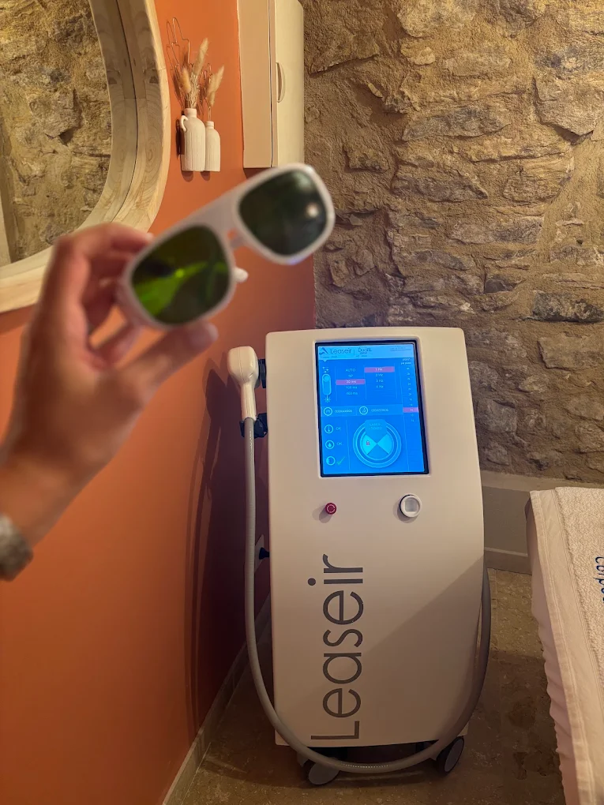

Forcalquier s'étend entre la montagne de Lure et le Luberon, à une vingtaine de kilomètres au nord de Manosque. Pour votre épilation laser, l'institut LUMIA vous attend au 10 Bis avenue Jean Giono, à côté de l'opticien ATOL. Tout commence par un bilan préalable : il valide votre éligibilité, fixe les zones à traiter et estime le nombre de séances.
Une vingtaine de kilomètres entre Forcalquier et l'institut
Deux itinéraires relient Forcalquier à Manosque. Le plus rapide passe par la D16 puis la D5 : environ 20 km, 25 minutes sans trafic. L'autre suit la D4100, la D105 et la D907, sur près de 23 km, pour une durée voisine. Comme les séances sont espacées de 6 à 8 semaines, ce trajet reste occasionnel. Margaux, infirmière diplômée d'État et esthéticienne, assure elle-même chaque séance.

Réserver mon bilan laser (nouvel onglet)Bilan à 20 €, offert pour tout achat de séance ou de cure.
Prévoir la durée d'une séance
Après le bilan, chaque séance suit le même cadre : lunettes de protection, rasage de la zone la veille ou sur place, passage du laser avec refroidissement, puis conseils pour la suite. La durée varie de 10 minutes à 1 h 30 selon la zone, ce qu'il faut garder en tête pour caler le retour vers Forcalquier. La méthode complète est détaillée sur la page de Manosque.
Venir de Forcalquier et se garer
Depuis le centre de Forcalquier, comptez environ 25 minutes. L'institut se situe au 10 Bis avenue Jean Giono, à côté de l'opticien ATOL. Quatre parkings se trouvent à proximité : place du Docteur Joubert (45 minutes gratuites), Monoprix (1 h 30), La Poste (3 h) et Souvenir Français (3 h). Pour une zone longue à traiter, mieux vaut viser les deux derniers.
Questions fréquentes
Quel itinéraire prendre de Forcalquier à l'institut ?
Le calcul d'itinéraire propose deux options : la D16 puis la D5 (environ 20 km, 25 minutes), ou la D4100, la D105 et la D907 (environ 23 km, durée voisine). L'institut se trouve avenue Jean Giono, sur la D907.
Combien de séances d'épilation laser faut-il ?
En moyenne 8 à 12 séances selon la zone, la couleur du poil et votre type de peau, espacées de 6 à 8 semaines. Le bilan préalable précise votre protocole et le nombre de séances estimé. Depuis Forcalquier, chaque rendez-vous représente un trajet d'environ 25 minutes.
La durée d'une séance est-elle la même pour toutes les zones ?
Non : de 10 minutes à 1 h 30 selon la zone. Une petite zone du visage va vite, des jambes entières demandent bien plus de temps. Le bilan préalable fixe le protocole de chaque zone.
Les poils blancs, blonds ou roux peuvent-ils être traités ?
Le laser cible la mélanine, donc le poil foncé. Les poils blancs, blonds, roux et le duvet n'en contiennent pas assez pour réagir. Le bilan vérifie que votre pilosité est adaptée.
Vos voisins de Villeneuve et de Volx ont aussi une page dédiée : lisez l'épilation laser à Villeneuve, puis celle de Volx.
Découvrez aussi Margaux, la praticienne de LUMIA, nos soins du visage et les tarifs.